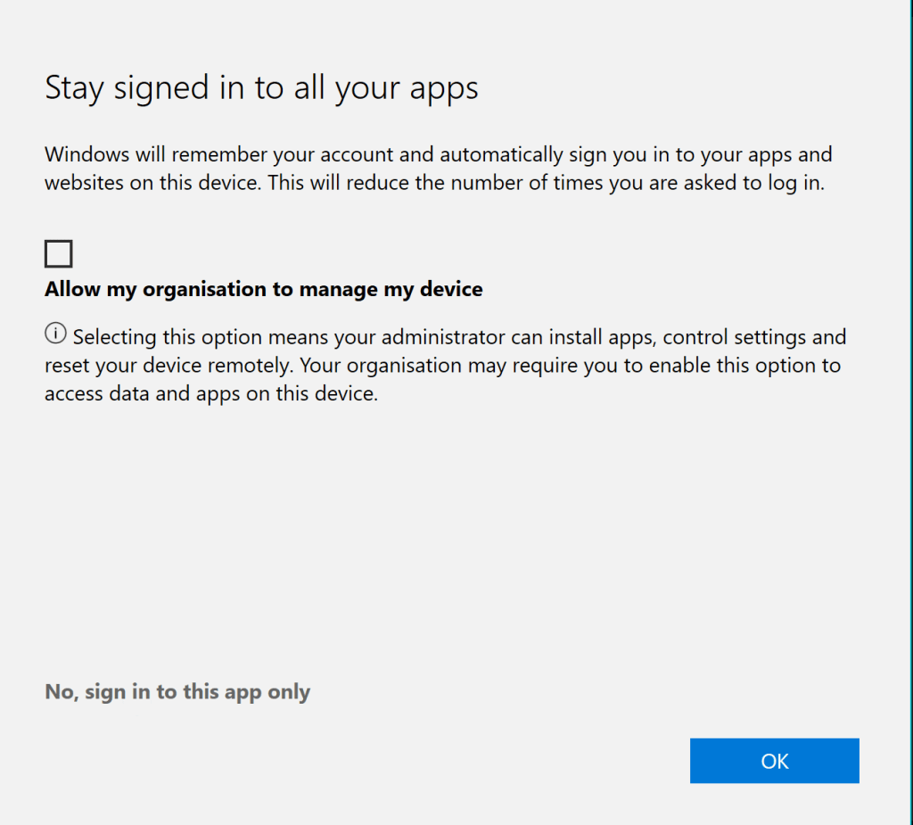

Teams Login and Complications
Why Does Microsoft Have Multiple Teams Accounts? 🤔
Microsoft Teams is one of the most popular collaboration tools in the business world, but you may have noticed that users often end up with multiple Teams accounts. This can lead to some confusion, and if you've ever wondered why Microsoft allows or even encourages multiple accounts, you're not alone! Let’s dive into the rationale behind Microsoft’s approach to managing Teams accounts and how it can actually be beneficial.
🧩 Multiple Accounts: The Key to Enhanced Collaboration
The main reasons for multiple Teams accounts are rooted in Microsoft’s vision of flexibility and collaboration. Here's a look at the reasoning:
1. Cross-Organization Collaboration 🏢🔄🏢
-
Many professionals work across multiple organizations or projects, such as consultants, freelancers, or project-based teams. Microsoft allows them to join different organizations with different Teams accounts, ensuring data privacy and security across businesses.
-
Instead of needing to use one account for all their workspaces, users can join individual organizations’ Teams without compromising sensitive information across clients or departments.
2. Role-Based Access 🛡️
-
With multiple accounts, users can maintain clear role distinctions. For example, someone who is a project manager in one organization may have different permissions or responsibilities in another.
-
Teams accounts help separate and manage access levels, ensuring that each role aligns with the organization’s data policies and security requirements.
3. Simplified Compliance Management 📊✅
-
Different organizations may need to follow specific data governance rules. By maintaining separate accounts, each organization can tailor Teams policies and data handling requirements independently.
-
This ensures that each account complies with industry standards without affecting access for other accounts.
📸 Screenshots: Pausing Between Accounts for Seamless Switching

For those who frequently switch between accounts, Microsoft has built in pausing capabilities so you can easily pause or resume activity in one account while focusing on another. Here’s how to make the most of it:
-
Pausing Notifications 🛑
You can pause notifications for accounts you’re not actively using. This way, you're focused and not overwhelmed by alerts from multiple organizations. -
Effortless Account Switching 🔄
Switching between accounts is easy, and each account will retain its own notifications, chats, and activity history.
🚀 Benefits of Multiple Teams Accounts
1. Greater Flexibility
Multiple accounts make it easier to manage work-life balance by separating personal and professional workspaces or managing side projects more fluidly.
2. Enhanced Security
With data compartmentalization, risks are minimized because sensitive data is limited to the relevant organization, protecting both the user and the organization.
3. Improved Productivity
Rather than creating one "catch-all" workspace, users can quickly move between specialized environments, focusing on the task at hand without unrelated distractions.
👥 Who Benefits the Most?
-
Consultants and freelancers who work with multiple clients.
-
Cross-functional team members who contribute to various departments.
-
Project managers overseeing projects across multiple organizations or departments.
🔗 Connect with me:
-
💼 LinkedIn: Rifat Erdem Sahin
-
🐦 Twitter: @rifaterdemsahin
-
🎥 YouTube: Rifat Erdem Sahin
-
💻 GitHub: rifaterdemsahin
Having multiple Teams accounts might seem like extra work at first, but when leveraged correctly, it offers unmatched flexibility, security, and productivity. Are you using multiple Teams accounts? Let me know how it’s working out for you! 😊
Imported from rifaterdemsahin.com · 2026